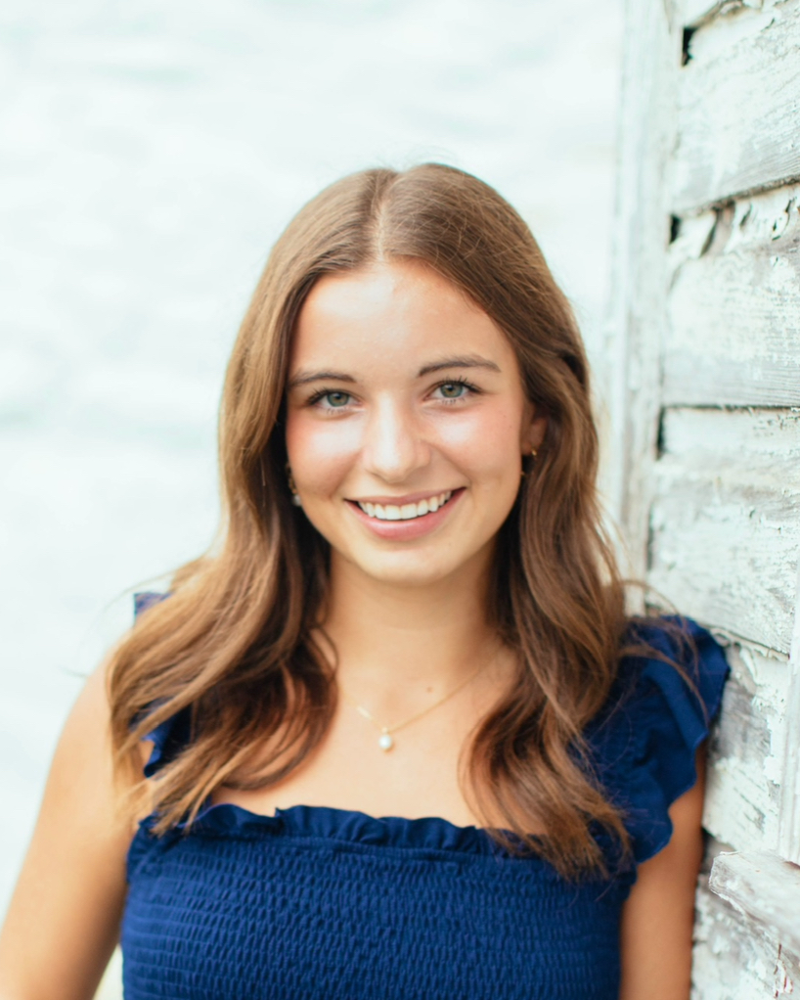

I am a journalism student specializing in multimedia formats, including news reporting, sports reporting, and social media management. I am also interested in vertical video production. I have professional and student publication experience within these fields.
Report and write articles for Bethesda Magazine, published in print six times a year. Support staff in various ways, such as coming up with story ideas, writing headlines, fact-checking, proofreading stories in layout, and participating in editorial meetings. Occasionally report for Bethesda Today, the digital newsroom of Bethesda Magazine.
Produce 5-6 articles per week, covering Washington County topics, including crime, court, politics, economics, entertainment, culture, and human-interest stories, while capturing original photography 1-2 times per week. Optimize story performance and audience reach using SEO strategies, including headline writing, metadata creation, URL structuring, internal linking, subheadings, and strategic photo selection.
Pitch 3-4 stories each week at weekly editorial meetings surrounding Maryland athletics, such as an exploration of superstition culture in baseball and gymnastics, which I was invited to discuss on Fox 5 DC’s show, “The DMV Zone.” Produce multimedia content to supplement stories, such as a behind-the-scenes look at facilities staff event cleanup in Xfinity Center and a day-in-the-life of mascot Testudo, averaging 200 likes on Instagram.
Manage all social media pages, including Instagram, Facebook, and X, of Testudo Times, a student publication. Produce personal vertical video content from start to finish and edit other reporters' vertical video.
Organize and promote campus-wide Panhellenic events, creating all promotional materials, such as Instagram posts and flyers, and contacting campus and Greek life partners.